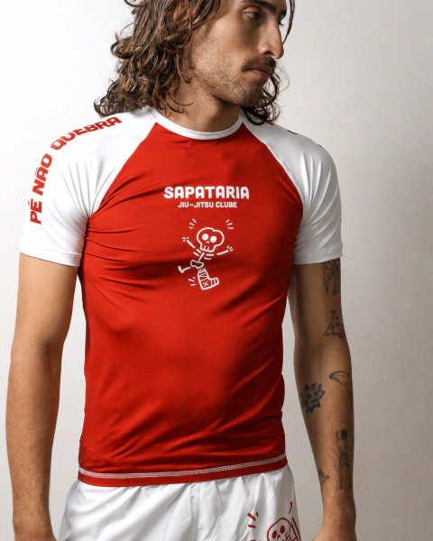
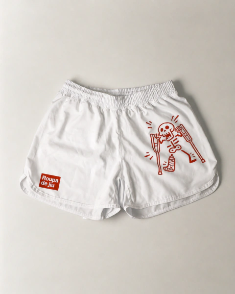

live preview ↗
playdoom: a RAM net learns Doom
open source
live
A weightless RAM neural network, truth-table neurons with no backprop and no GPU, evolved by a
genetic algorithm. I wrote it nine years ago to play tic-tac-toe, then dropped the same brain into
Doom. The game's depth buffer becomes a grid of boolean sensors, the neurons vote on a move, and
selection alone teaches it to run a corridor: over 25 generations 1 in 14 grows to 7 in 14
of the population clearing the gauntlet. The preview replays the fittest brain and streams the
network's learning log underneath.
C++ViZDoomGenetic AlgorithmsWiSARD


visit store ↗
Roupa de Jiu store
live · my brand
The real Nuvemshop storefront for Roupa de Jiu, my no-gi jiu-jitsu apparel brand. I run the
whole thing myself, on my own time: catalogue, pricing, orders, and marketing. I make the creative
and the content by hand. Where agentic Claude Code workflows help is the operations around
it: planning the content calendar, keeping the posting pipeline moving, and setting up the
campaigns on Google Ads and Meta. It lets a one-person brand run like it has a small team behind it.
NuvemshopClaude CodeAgentsGoogle AdsMeta AdsGA4
live preview ↗
Atlas Jiu-Jitsu
open source
live
A knowledge graph for Brazilian jiu-jitsu. Each position is a node, and every sweep, submission,
and guard pass is an edge, so you can see the whole game at once instead of watching one technique
video at a time. I wrote a 400-line parser for GrappleMap's base62 skeletal format, then a
small Three.js renderer that interpolates between joint poses with quaternion SLERP. The
figures are real geometry, not pictures. Eleven validators run in the test suite and catch
curation mistakes before they reach the live atlas.
Next.jsReact FlowThree.jsVitest
live preview ↗
Curador.ia
demo
A two-sided marketplace for Brazilian AI creators. They sell Skills, Agents, Files, and
MCP servers, so a buyer is wiring up an agent toolchain, not just downloading a file.
Checkout goes through Mercado Pago with HMAC-checked webhooks and one
atomic Supabase RPC that approves the order, records the purchase, and stays idempotent
in a single transaction. The frontend reads Supabase directly over RLS and quietly
falls back to Express when it has to.
React 18TypeScriptSupabaseExpressMCP
live preview ↗
Roupa de Jiu
live · my brand
My own no-gi grappling clothing brand. I built the whole thing: storefront, payments, and an
internal dashboard that uses an LLM to draft and manage the ads. It has two product lines
with two different looks, and scrolling from one to the other flips the entire page, colours and
type included, off a single data-theme attribute, so no JavaScript touches colour
while it renders. One Zod schema validates the form in the browser and parses the request
on the server, so the two can never drift apart.
GoExpressSupabaseFramer MotionVercel
Platform take-home
open source
A brutal systems take-home in Go. Pull a container image from S3, unpack it into a canonical
filesystem on a devicemapper thinpool, snapshot it to activate, and track state in SQLite,
all driven by a finite-state-machine library I had to reverse-engineer first. It models what a
real orchestrator does. I didn't pass the bar they set, but I'm genuinely proud of the code, so
it stays up.
GoFSMdevicemapperSQLite
Self-Driving GTA
open source
A deep-learning agent that drives cars inside GTA San Andreas straight from the screen. It grabs
game frames, runs them through a trained model, and steers. An old one, but it's the kind of thing
I'll build on a weekend just to see if it works.
PythonDeep LearningComputer Vision